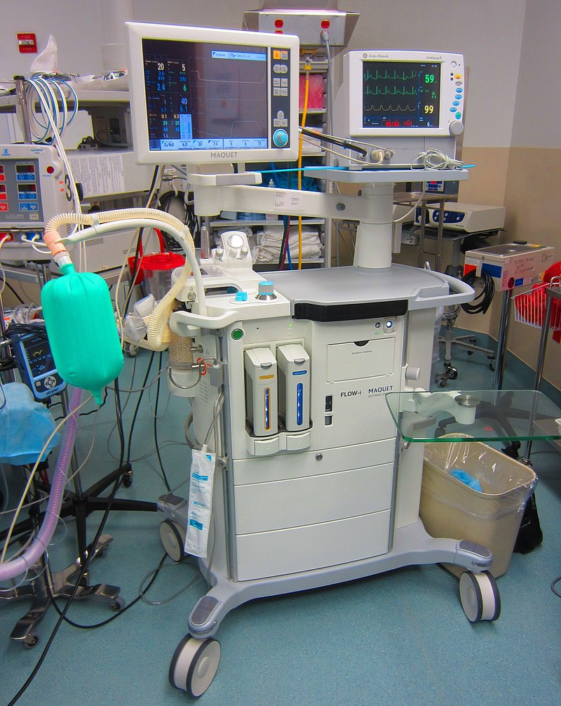

Diagnostic equipmenthttps includes medical imaging machines, used to aid in diagnosis. Examples are ultrasound and MRI machines, PET and CT scanners, and x-ray machines.

There are several basic types:
Diagnostic equipmenthttps includes medical imaging machines, used to aid in diagnosis. Examples are ultrasound and MRI machines, PET and CT scanners, and x-ray machines.
Treatment equipment includes infusion pumps, medical lasers and LASIK surgical machines.

Life support equipment is used to maintain a patient's bodily function. This includes medical ventilators, incubators, anaesthetic machines, heart-lung machines, ECMO, and dialysis machines.
Medical monitors allow medical staff to measure a patient's medical state. Monitors may measure patient vital signs and other parameters including ECG, EEG, and blood pressure. 
Medical laboratory equipment automates or helps analyze blood, urine, genes, and dissolved gases in the blood. Diagnostic Medical Equipment may also be used in the home for certain purposes, e.g. for the control of diabetes mellitus Therapeutic: physical therapy machines like continuous passive range of motion (CPM) machines A biomedical equipment technician (BMET) is a vital component of the healthcare delivery system. Employed primarily by hospitals, BMETs are the people responsible for maintaining a facility's medical equipment. BMET mainly act as an interface between doctor and equipment.
Top